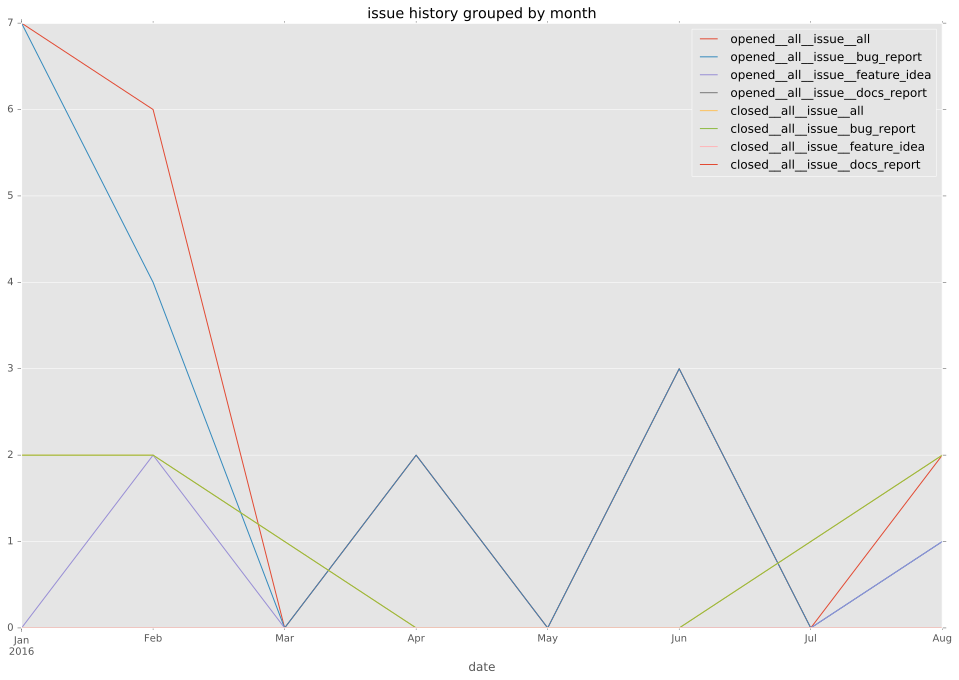
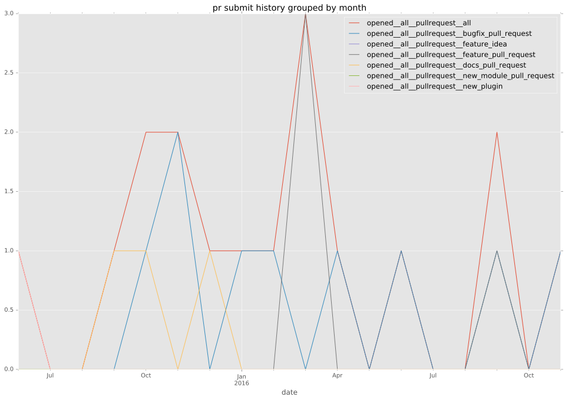
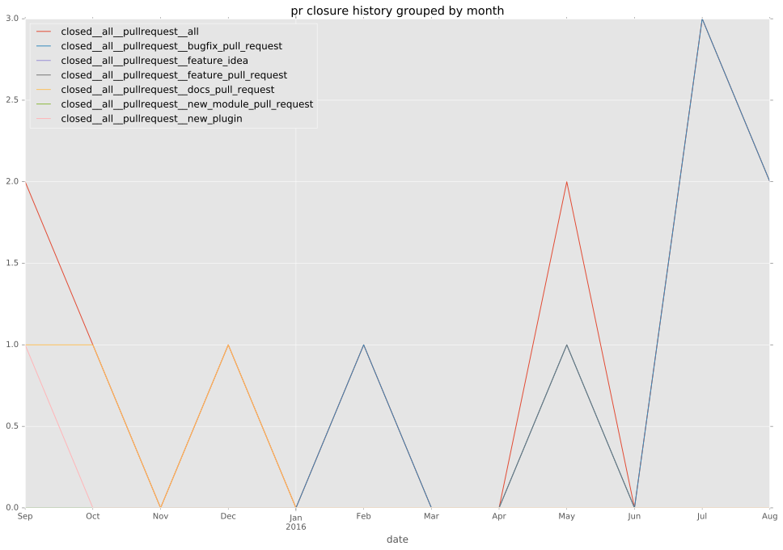
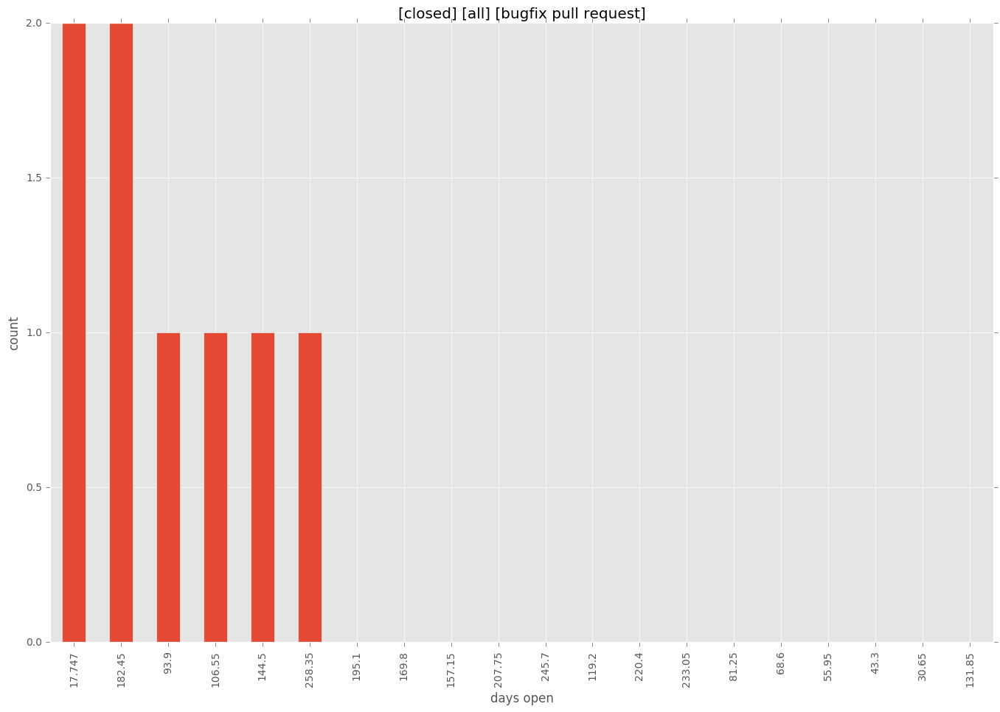

authors
- erydo
- wimnat
maintainers
- erydo
- wimnat
contributors
- erydo : 102 commits
- bretmartin : 8 commits
- gechr : 2 commits
- Etherdaemon : 13 commits
- wimnat : 72 commits
- abadger : 15 commits
- bcoca : 1 commits
- halberom : 2 commits
- herbygillot : 4 commits
total issue counts
bugfix pull request: 9
pullrequest: 17
docs pull request: 3
feature pull request: 4
feature idea: 4
issue: 20
new plugin: 1
bug report: 16
issue history

pullrequest history


days open by issue type
feature pull request
count: 1
std: nan
min: 51
max: 51
median: 51.0
mean: 51.0
all
count: 31
std: 82.1428469913
min: 0
max: 271
median: 24.0
mean: 73.7741935484
pullrequest
count: 0
std: nan
min: nan
max: nan
median: nan
mean: nan
docs pull request
count: 6
std: 3.61478445646
min: 0
max: 7
median: 0.0
mean: 2.33333333333
bugfix pull request
count: 13
std: 82.9402008864
min: 18
max: 271
median: 109.0
mean: 121.076923077
feature idea
count: 1
std: nan
min: 197
max: 197
median: 197.0
mean: 197.0
issue
count: 0
std: nan
min: nan
max: nan
median: nan
mean: nan
new plugin
count: 2
std: 0.0
min: 83
max: 83
median: 83.0
mean: 83.0
bug report
count: 8
std: 68.2242887206
min: 0
max: 202
median: 13.0
mean: 35.625
closures grouped by total days open
